建于：2024-05-19 19:57:00 Sunday 6179字 21分
Project, Python, and DPW
CC BY 4.0（除特别声明或转载）
BilibiliVista
- Bilibili data analysis platform
- Sentiment analysis based on deep learning
Design Overview

Project Overview
- Data Acquisition
- Crawling Movie Comments
Douban: Collect comments from theDoubanmovie site.Maoyan: Collect comments from theMaoyanmovie site.
- Data Cleaning
- Perform data cleaning to ensure the quality and consistency of the collected comments.
- Crawling Movie Comments
- Model Training
- Machine Learning Model
- Utilize SnowNLP for sentiment analysis and other natural language processing tasks.
- Deep Learning Model
- Employ PaddleNLP to build and train deep learning models for advanced text analysis.
- Machine Learning Model
- Model Application
- Crawling Data from
Bilibili- Implement real-time data crawling from
Bilibili, allowing users to input a video url and retrieve video information and comments instantly.
- Implement real-time data crawling from
- Backend Development
- Develop the backend using the FastAPI Python framework to handle data processing and model integration.
- Frontend Development
- Implement a user-friendly interface to visualize and interact with the analysis results.
- Crawling Data from
Data Acquisition
Data Acquisition: Selecting the Right Dataset
Sources of Our Data
- Douban: A prominent movie site where users freely express their opinions on movies. These comments are often labeled by users’ sentiments, making them invaluable for our analysis.
- Maoyan: Another key player in the movie industry with a rich database of user comments, similarly labeled, allowing for comparative studies and robust model training.
Why These Datasets?
- Labeled Data: We chose to focus on comments from Douban and Maoyan because they offer labeled datasets. This is critical as labeled data provides a foundation for training and evaluating our sentiment analysis models with higher accuracy.

Data Preprocess: Splitting the dataset

- Data Categorization
- Negative dict: ratings less than or equal to 3
- Positive dict: ratings greater than 3
- Dataset Splitting
- Random Split
- Training and Testing set
- Training set : Test set = 8:2
Model Training
SnowNLP
SnowNLPis a library focused on natural language processing tasks for Chinese text, such as sentiment analysis and text processing.- Uses the labeled training data to train the classifier using the
Naive Bayesalgorithm.
Naive Bayes Algorithm
- Assumes that features are independent of each other.
- Estimates probabilities based on the features and labels in the training dataset.
\(T = \{(x_1, y_1), (x_2, y_2), \ldots, (x_N, y_N)\}\) \(x_i = (x^1, \ldots, x^n)\) \(y_i = c_k \quad and \quad k = 1 \ldots K\) \(y = \arg\max_{c_k} P(y = c_k) \prod_{j} P(x^j | y = c_k)\)
Split characters
Split Chinese characters and calculate the probability that the term appears in the set

Training Result
| Method | Test Dataset Accuracy |
|---|---|
| SnowNLP | 78.58% |
| KNN | 78.32% |
SnowNLP Model Evaluation
- Comment of Movie
- Crawl the Comment of the Movie 《 Wandering Earth 2》 From the
Bilibili
- Estimation the comment score
- Get a comment sentiment score using the trained SnowNLP model.
- Average comment sentiment score is only 0.54. (Calculate method In the appendix )
- Comment Score Distribution
- The distribution is polarized, it does not work well

- Comment Score Example
| Comment | Like | Sentiment | Sentiment x Like |
|---|---|---|---|
| 六公主给流浪地球2的颁奖词： 这是中国电影工业的一次全面跨越升级，以硬实力将中国科幻电影提升到前所未有的境界，7万多字原创剧本，2万多名工作人员，90多万平方米的置景总面积，历时1400余天的摄制，奉上一场2小时53的视觉盛宴。 如此庞大精良的制作规模，造就了影片同名话题超11.8亿的网络关注量，收获40.23亿票房。 M大数据显示，影片传播指数达9.8，位列年度影片之首。 片中昂扬的中国精神，如同闪耀的星群，照耀着中国科幻电影前进的方向。 |
13621 | 4.14E-11 | 5.64E-07 |
| 其实导演郭帆不是半路出家，而是从小励志拍科幻片。 郭帆15岁时看了卡梅隆的《终结者2》，然后立志以后拍科幻片，他高考本来要考电影学院，但山东省没有招生导演系的，郭帆母亲也劝他考法律后当个政法委总书记就行。 郭帆考上法律专业后想如果自己以后不奔着梦想去，等晚年躺病床、摇椅就特别后悔，所以他就觉得不管选什么专业，只要奔着哪个目标去，然后他大学也拍过电影短片，而且他学过法律学专业很适合工业化方面。 还有郭帆小时候画画很好，也拿过奖，有美术基础的。所以不要总半路出家、非科班、中途转行也能成功，搞得好像人家外行的行我也行，郭帆是自己本来就有这梦想、本来就有相关知识、而且他29岁时还考上北京电影学院管理系研究生。 |
7597 | 0.000216 | 1.639879 |
| 中国科幻元年必定是1999年。 郭帆在这一年高考，而且这一年的《科幻世界》压中了高考作文《假如记忆可以移植》，郭导看过并且受到启发拿了高分，同年也是大刘在科幻世界上开始首次投发文章《微观尽头》和《鲸歌》，次年就投发了《流浪地球》。同年高中生谢楠在1月的科幻世界发表了短篇奇想，页码43是吴京的生日4月3号。 |
6672 | 8.11E-10 | 5.41E-06 |
It turns out that the model does not work well in practice
PaddleNLP
Pre-training model ERNIE (Like Bert-wwm)
- With the development of deep learning, the number of model parameters has increased rapidly, and in order to train these parameters, larger data sets are needed to avoid overfitting.
- Nowadays, studies have shown that
Pretrained Models(PTM) based on large-scale unlabeled corpora can acquire generic language representations and perform well when fine-tuned to downstream tasks. - In addition, pre-training models can avoid training models from scratch.

- BERT requires minimal architecture changes for a wide range of natural language processing applications.
Training Process
- Remove a batch data from the
dataloader - Feed batch data to the model for
forward calculation - Pass forward calculation result to loss function to calculate loss. The forward calculation result is passed to the evaluation method, and the evaluation index is calculated.
- Loss reverse return and update gradient. Repeat the above steps.
Each time an epoch is trained, the program will evaluate the effectiveness of the current model training.
Training Result
| Method | Test Dataset Accuracy |
|---|---|
| SnowNLP | 78.58% |
| PaddleNLP | 85.31% |
PaddleNLP Model Evaluation
- Comment of Movie
- Crawl the Comment of the Movie 《 Wandering Earth 2》 From the
Bilibili
- Estimation the comment score
- Get a comment sentiment score using the trained PaddleNLP model.
- Average comment sentiment score is 0.89. (Calculate method In the appendix )
- Sentiment Score Distribution

Model Application
Crawle Bilibili video info
- Set the User-Agent and cookie information
Through bvid access to the comment information of the video including:
- Comment
- Number of comments and likes

- Crawl video basic information
Through bvid access to the basic information of the video including:
- Title
- Author
- Reply count, Favorite count,
- Coin count, Share count

- Crawl video comment content and
danmucontent
Through bvid request screen XML file obtained through basic information:
- Time
- Timestamp
Danmutext


Backend
Why FastAPI?
“FastAPI is a modern, fast (high-performance) web framework for building APIs with Python 3.6+.”
**Key Advantages: **
- High performance
- Rapid development
- Automatic interactive API documentation
- Type hints for fewer bugs

Introduction to the three main API categories: video, videos, newvideo
- Usage of 3 APIs:
- video: Fetch specific video information.
- videos: Gather statistics on all scraped videos.
- newvideo: Add new video data to the system.
Frontend
Appendix
Sentiment Score Calculate Method
-
Compute the values for the $sentiment_like$ column: \(\text_i = \text_i \times \text_i\)
Here, $\text_i$ and $\text_i$ represent the values of the $sentiment$ and $like$ columns for the $i$-th row, respectively, and $\text_i$ is the result of their product, stored in a new column $sentiment_like$.
-
Calculate the ratio of the sum of the $sentiment_like$ column to the sum of the $like$ column, which represents the mean sentiment value: \(\text = \frac_i)}}_i)}}\) Here, $\sum (\text_i)$ is the sum of all values in the $sentiment_like$ column, and $\sum (\text_i)$ is the sum of all values in the $like$ column. This ratio represents the weighted average sentiment value, where the weight for each comment is its number of likes.
Presentation

 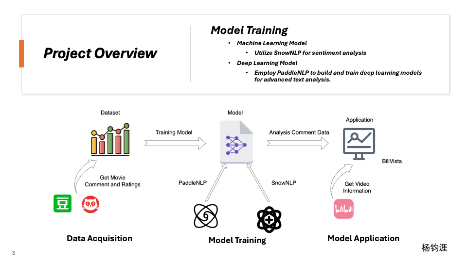
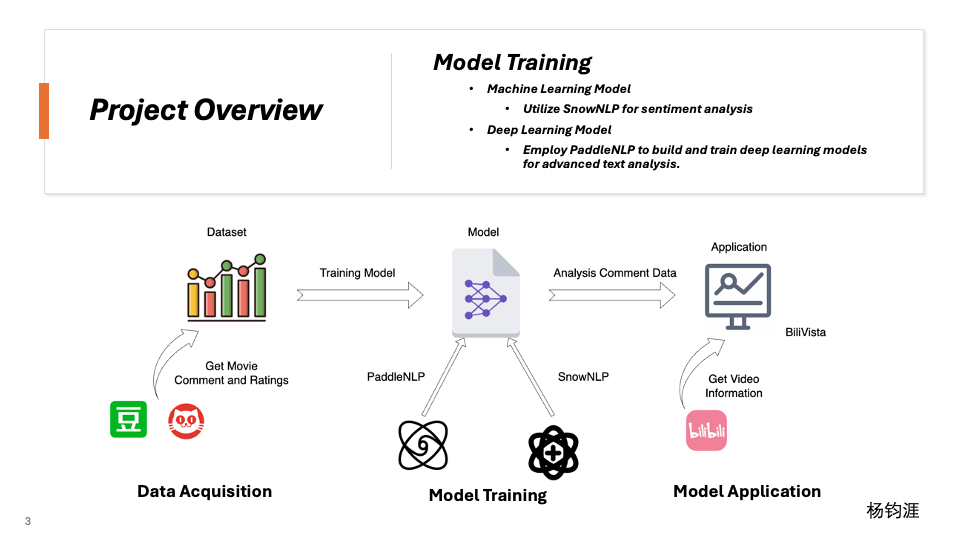
 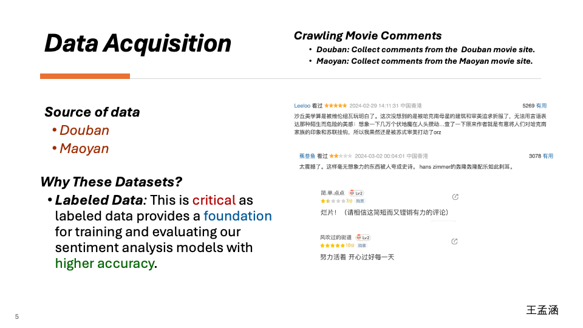
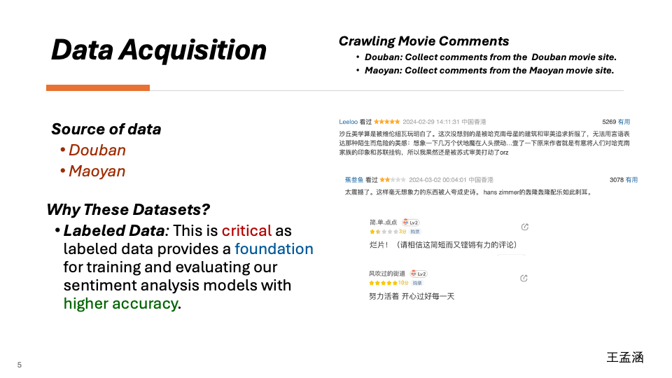
 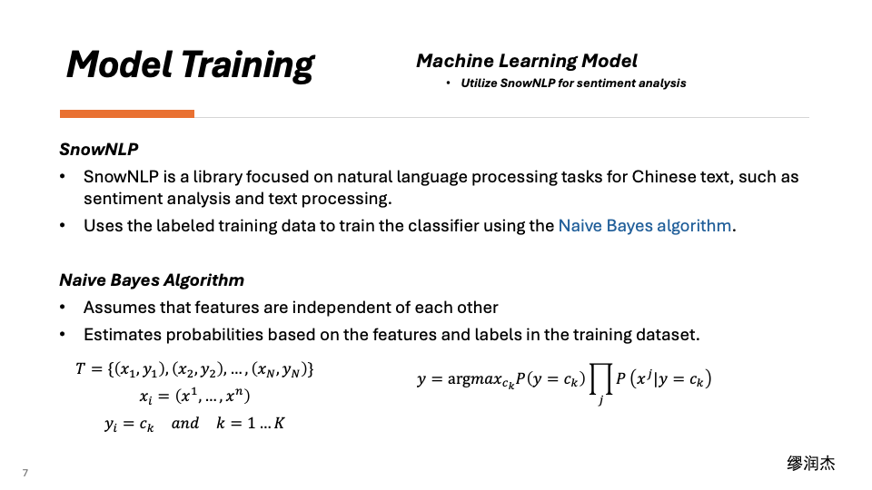
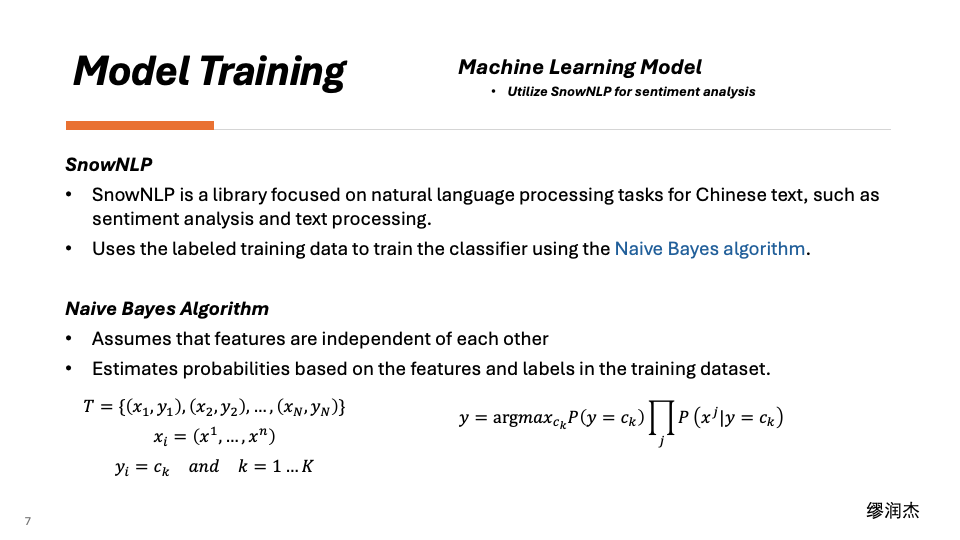

 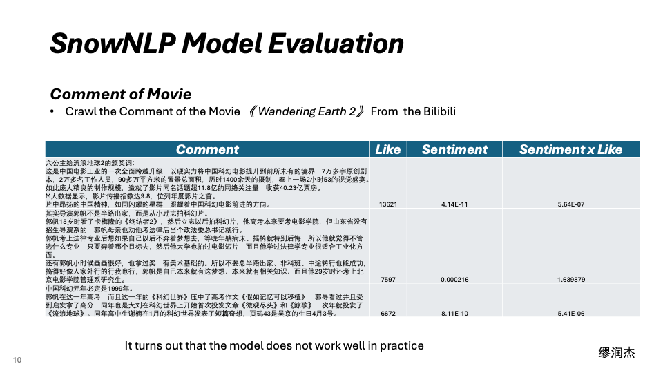
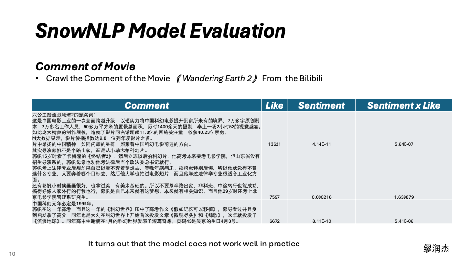
 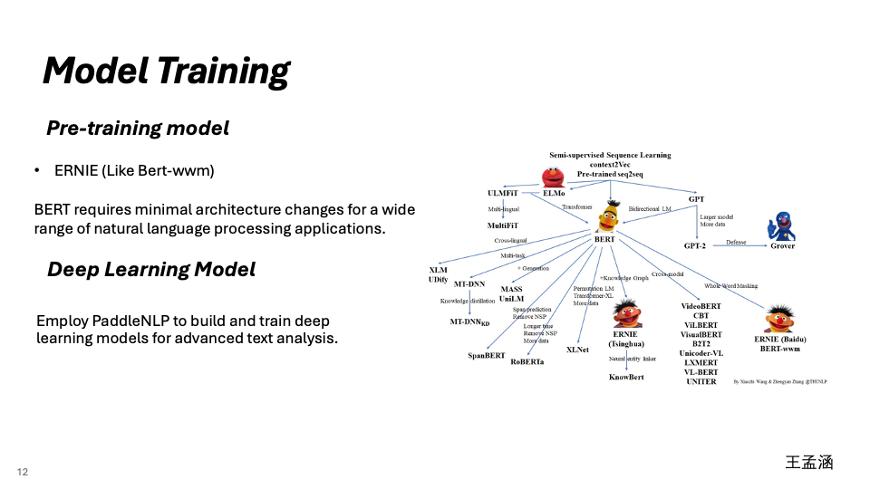
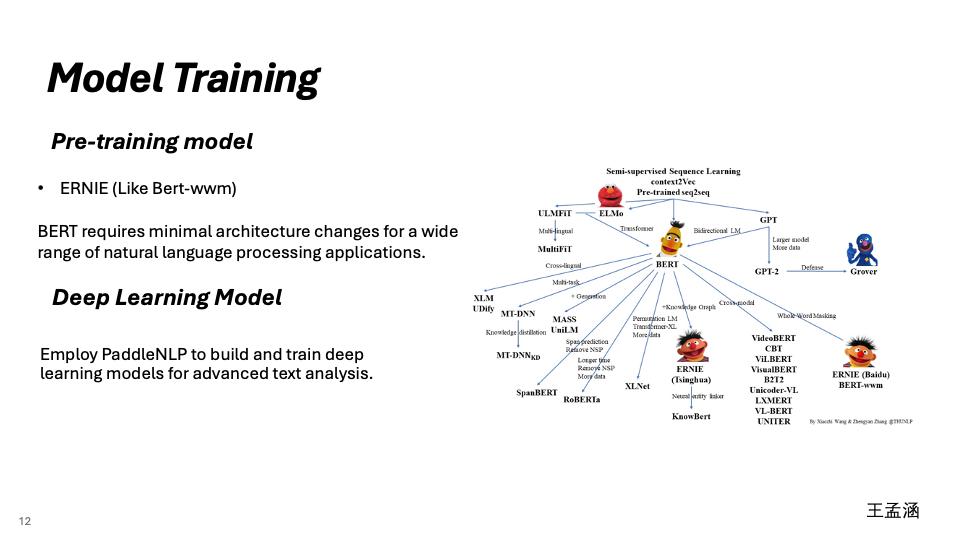
 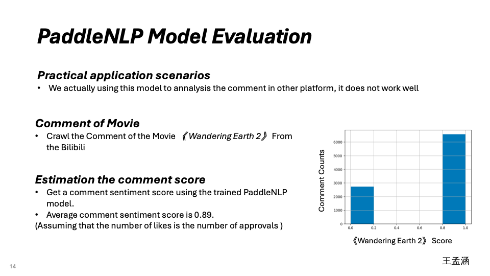
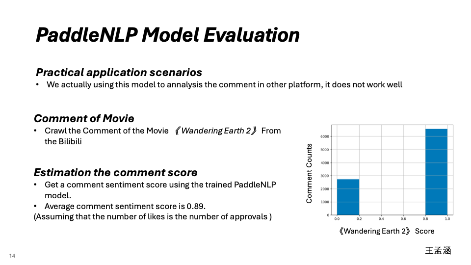
 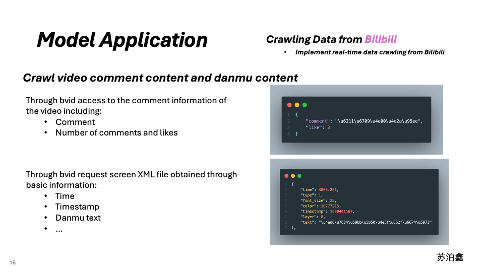
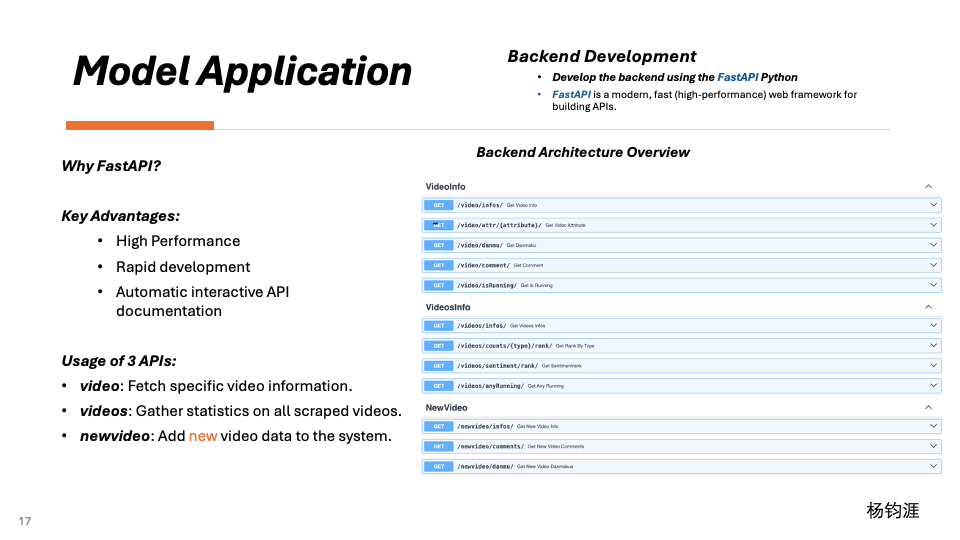
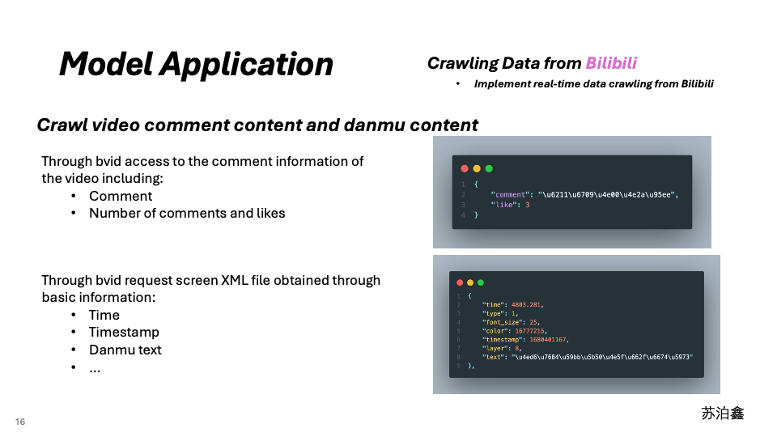
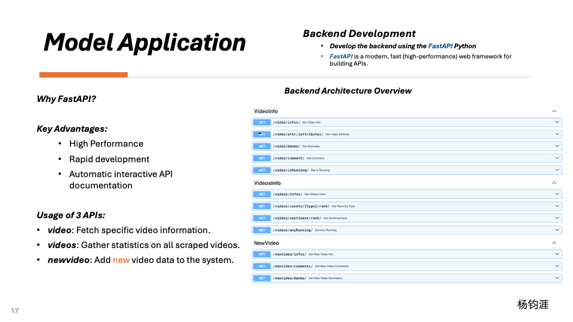